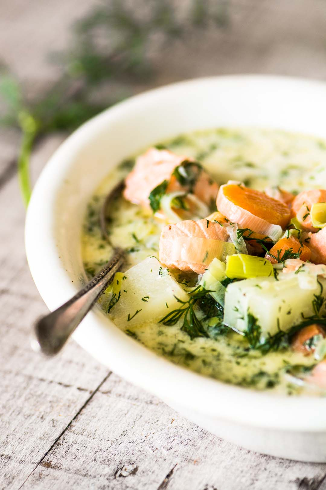

Finnish Salmon Soup

Also known as LOHIKEITTO
A comforting, delicious 30 minute meal every true Finn can approve!
INGREDIENTS
- 1 lb skin-on salmon filet
- 4 Tbsp unsaltd butter
- 1 large leek, trimmed, sliced, and well rinsed
- 5 cups water (you can also use fish stock)
- 1 lb russet potatoes, peeled and diced
- 1 large carrot, sliced
- 1 cup fresh dill for garnish, finely chopped, divided
- 1 cup heavy cream
- 1/4 tsp allspice, use more to taste
- salt and pepper to taste
STEPS
- Remove the skin from the salmon and cut into largish chunks.
Remove any small pin bones and discard. Reserve the skin.
- Melt the butter in a soup pot and saute the leeks for 10 minutes, or until nice and soft.
- While the leeks are cooking,
put 5 cups of water and the reserved fish skin in a saucepan and bring to a boil,
turn down the heat and simmer gently for 10 minutes.
Note: if you are using fish stock you can skip this step.
- Strain the broth and add to the pan with the leeks,
along with the potatoes, carrots, and half of the fresh dill.
Cook for another 10 minutes, or until the potatoes are just tender.
- Add the salmon chunks to the soup along with the cream and allspice,
and gently simmer on low heat until cooked through, just a few minutes.
Add the remaining dill, and salt and pepper to taste.